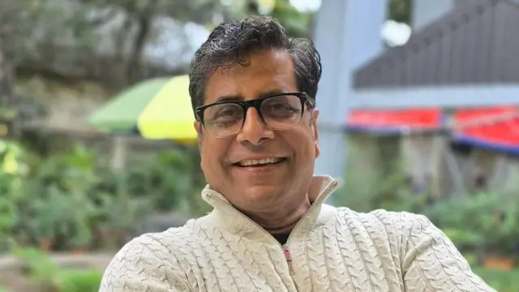
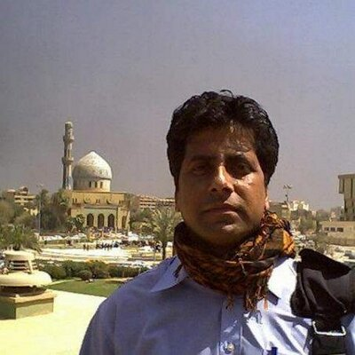
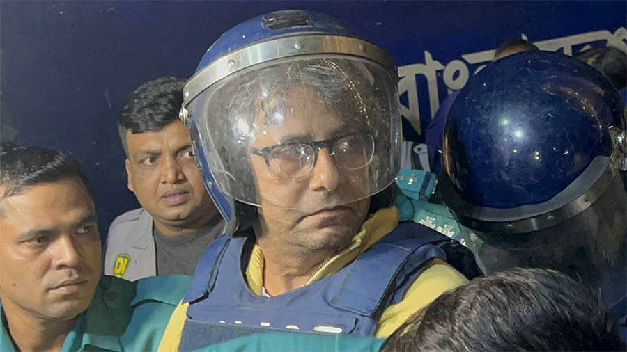

MY FAVOURITE CELEBRITYNow, I am very sure that a lot of you do not know the guy who I am about to mention. But that's ok. I will introduce him. Ladies and Gentlemen, presenting to you:  WHO IS HE AND WHY IS HE MY FAVOURITE? 🤔 Anis Alamgir is a senior journalist from Bangladesh. He is mostly known as a journalist but is also a columnist and an educator too. He is known for being the only journalist from Bangladesh who went to cover the Iraq War in 2003 where he spent 51 days (11 March, 2003 - 30 April, 2003) covering the war and that even directly from Baghdad, the capital city of Iraq. He has also covered the Afghan War in 2001 but it was the Iraq War that got him fame. I read his book "Iraq Ronangoney" (ইরাক রণাঙ্গনে), which basically means "Iraq on the battlefield" in english, where he wrote about his experiences in Iraq. I still genuinely wonder how the hell did this guy cover an entire war 😭? Considering the fact that he was alone in Iraq. He had to gather information, click pictures for the newspaper, write news for his newspaper, take interviews, give interviews to other bengali medias because he was the only bengali in Iraq covering the war all while being alone whereas companies like BBC, Al Jazeera, Reuters, etc. had a team of like 10-15 people covering the war. It sounds unreal, doesn't it?  Anis Alamgir is also known for criticizing governments throughout his career. His criticism towards the government once landed him in prison during Muhammad Yunus' regime in Bangladesh. He spent about 3 months (20 December, 2025 - 14 March, 2026) in prison after being arrested in 14 December, 2025 and being placed in detention for 5 days.  I am genuinely not going to lie but I got to know him only in 2025 when I was changing channels in my tv one day and came across a channel where he was at a talk-show and my dad tells me, "Look. That's Anis Alamgir". I asked my dad, "Who is he?". My dad tells me, "He was the editor before me of my former workplace." I didn't really think much about him then but one day I became a bit curious and decide to look him up on the internet and oh lord this guy is a legend! In my opinion, I genuinely think there will be a huge gap in the history of journalism in Bangladesh if they skip Anis Alamgir's name. Since then, I started looking up to him because he was someone who would tell the right thing and make it make sense. His haters might say anything but who cares? Every celebrity got haters. I started looking up to him more after he went to prison. I started watching his talk-shows where he criticized governments, read his posts where he did the same and I genuinely have nothing but pure respect for this guy and his honesty and his neutral stance. Another thing that genuinely amazes me is how this guy is still living in Bangladesh even after all these mental tortures towards him. I remember him once saying that he had been arrested by the Taliban in 2001 when he was covering the Afghan War and since then he doesn't fear death anymore let alone these arrests and threats made by the government and their people. To me, he is a legend and an inspiration. An inspiration to be honest, neutral, resilient and someone who speaks up against the wrongdoings. |